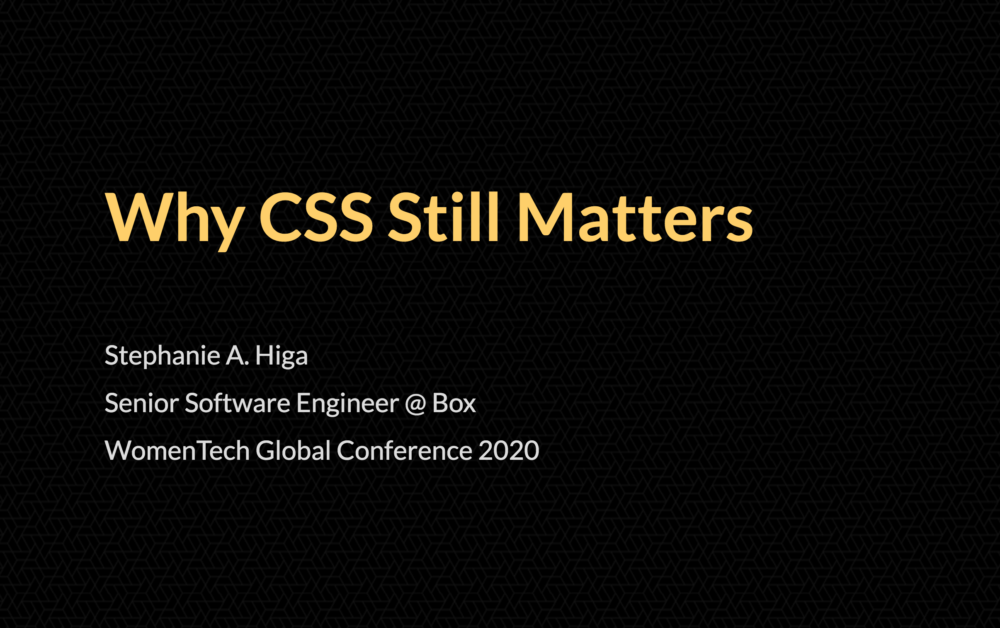

In June, I gave a talk at WomenTech Global 2020, a virtual conference hosted by CEO Anna Radulovski and her team. Anna reached out to me on LinkedIn a couple of weeks before the conference, asking whether I'd be interested in speaking. I love opportunities that drag me outside of my comfort zone, so of course I said yes!
And then I panicked. What was I even qualified to talk about?
Giving a conference talk is challenging for a number of reasons (unless you are blessed by the public speaking gods), but the most difficult part is selecting a topic. It's totally intimidating, like facing a blank page.
I scrambled for the next few days, shuffling through various topics related to frontend engineering, doubting whether I'd really learned anything of use in the 7+ years I've been working as a professional developer.
Optimistic Me: Data visualization?
Realistic Me: Oh, please. You used D3, what, five years ago, and you think you're an expert now?
OM: I could learn.
RM: You're gonna learn this whole field in two weeks?
OM: Okay, okay, maybe not. I guess I could talk about JavaScript, right? I know JavaScript pretty well.
RM: 45 minutes on closures, callbacks, arrow functions, async/await, and five ways to instantiate classes? Geez, sign me up.
OM: Are you saying that wouldn't be interesting???
RM: I'm saying, if people wanted to learn that stuff, they could just read JavaScript: The Good Parts. Or MDN. Don't be a textbook.
OM: Well...maybe I could talk about React?
RM: There are already two other talks on React.
OM: I could talk about React Hooks--
RM: No.
OM: But...what else is there?
RM: Hmm. Let's think. Is there, possibly, a technology that you absolutely love, with all your heart, that you've known for ages, that is incredibly cool, but it flies under the radar, so most people don't know it's incredibly cool?
OM: OhhhhhhHHHHhhhHHH you mean CSS
Cascading Style Sheets, my dear old friend
Just a taste of what CSS can do.
I like CSS way more than JavaScript. I like it more than English, too.
I learned CSS when I was a wee gal, during the glorious days of Web 1.0, when you could craft a second home on the internet without social media panopticons breathing over your shoulder.
Sure, there were some drawbacks during those days. You had to use HTML tables to create columns of text. You had to use Photoshop or PaintShopPro 7 to make gradients and rounded corners. Marquees and flashing text were all the rage. But that was the internet when it was beautiful.
CSS reminds me of that internet, and because of that, it fills me with joy.
My first website was an MSN Communities page. I quickly tired of it because I couldn't edit the look and feel of the site, so I went to Geocities, which at the time was the best way to create a free website. (I believe that Yahoo's downfall started the day they ended Geocities; no one can convince me otherwise.) Geocities had a “PageBuilder” feature that allowed users to move and style HTML elements within a drag-and-drop editor, which led to some pretty funky-looking sites, mine included. No matter how hard I tried, I couldn't get the elements to align properly.
I knew there had to be a better tool out there.
It sounds dramatic to say that CSS changed my life, but it kinda did. If it weren't for CSS, I would have given up on websites a long time ago. I wouldn't have started making websites again right after college, as an unemployed architecture grad, and then dreamed that hey, maybe someday I could even get paid to build a website. Imagine that!
Honestly, I probably wouldn't use the internet without CSS, because it would look like this:
Six of the world's most popular websites, all sad and broken without CSS.
Over the years, CSS has become even more amazing. Yet I can't tell you how many times I've heard people -- mostly backend engineers, but some frontend engineers too -- dismiss this wonderful language as an afterthought, as a nice-to-have rather than a must-have.
Even at Hack Reactor, whose business was predicated on churning out new frontend engineers, we had a grand total of one lecture on CSS. Most of the content was outdated. Some of it was flat-out wrong. The focus was always JavaScript, JavaScript, JavaScript. Sure, JavaScript is great. It's important. It's the golden child. Meanwhile, CSS remains forever in the background, the overlooked, misunderstood, unsung hero of the web.
With this in mind, I had fuel for my conference talk. My goal wasn't to give an introduction to CSS (there are far too many tutorials for that), but to share my passion, and to demonstrate how fun CSS can be.
Creating my conference talk
Last year, I gave a talk at Women of Silicon Valley about my path from architecture ➡️ biz dev ➡️ software. While I at first had lofty goals for that presentation involving custom graphics, I eventually settled on a basic Keynote template. So, out of habit, I started creating this presentation in Keynote as well.
After about five slides, I started feeling like something was wrong.
Honest Me: What are you doing?
Defensive Me: What does it look like I'm doing? I'm making my CSS presentation.
HM: Uhh...nah, that's just a Keynote template.
DM: HEY! I spent hours working on these slides!
HM: I'm just saying. You can do better. Like, wayyyy better.
DM: No I can't.
HM: I'll tell you what you can't do. You can't just tell people that CSS is important and expect them to believe you. You need to prove it! With solid, incontrovertible evidence!
DM: O...kay.
HM: Imagine this. You're giving the talk. You're showing an example of a cool CSS thingamajig you built. But instead of switching back and forth between this Keynote template and the webpage with your example, you're just showing one seamless presentation. The example is part of the presentation. Wouldn't that be awesome?
DM: But I can't embed CSS examples into Keynote.
HM: Nope. Hahaha.
And that's why I scrapped my Keynote presentation and rebuilt it as a webpage.
You can find the presentation here. Check out the GitHub repo for navigation instructions and direct links to some of the most interesting slides (imo, I'm biased of course).
I practiced my talk with my family and one of my best friends, who's also a frontend engineer. They gave excellent feedback, which helped me to create a more cohesive and relatable presentation.
Connecting with a virtual audience
As I mentioned earlier, I spoke at Women of Silicon Valley in 2019. I was fully prepared, but when I walked to the front of that room that had seemed so small from the back (there were ~100 people), I felt sheer terror.
I've read that the fear of public speaking traces back to our instinctual fear of predators. Humans, like all predators, have their eyes in the front of their heads, so when speak publicly, we're standing before a crowd of predators. (Can't find a source for this exact idea, though. I may just be misinterpreting this Psychology Today article, which says that the ostracism we feel while speaking publicly makes us fear for our own survival.)
My biggest issue is that the adrenaline runs into my hands, no matter how much I prepare. Even if my voice sounds confident, my hands shake, and I end up doing silly things, like typing “boo.com” instead of “box.com” (this may or may not have happened while I was giving a live demo in front of my entire company).
At Women of Silicon Valley, I held a clicker in one hand and a microphone in the other. Both hands were shaking. I struggled with clicking the right arrow button to navigate to the next slide. My voice was a little too quiet, even with the microphone. The audience was supportive, and I didn't make any significant errors, but I left feeling like I could have expressed myself better.
WomenTech Global was a very different experience. The conference was completely virtual, hosted on Hopin.to. I commuted from my office into my dining nook, which has consistent lighting and a plain background, opened my presentation in a browser, and waited for my slot to begin.
I was nervous, of course, but significantly less nervous than I'd been at WoSV, even though my presentation consisted of multiple interactive slides.
Nervous Me: This is scary! I wanna go home.
Relaxed Me: You are home.
NM: Oh yeah.
RM: No one's going to attend anyway.
NM: But...THEY MIGHT! Some people found out about it on LinkedIn!
RM: So? It's the internet. People like posts without thinking twice. They've already liked a million other things by now.
NM: But...I'm on the agenda!
RM: You and a hundred other talks. Everyone's going to go to the talks about ML/data science/Python/React/social justice. CSS is just not flashy. Recruiters never reach out looking for CSS developers. They're always looking for React developers, aren't they?
NM: But...!
RM: Look. If anyone does show up, that means they're interested in what you have to say. They're not going to hurl tomatoes at you through the screen for being a less than perfect speaker. Besides, you know this presentation inside and out.
I took a deep breath, turned on my mic, and started speaking. Contrary to my expectations, about 30-40 people attended. When I reached the slide where I had to edit a CSS rule, I resorted to hunt-and-peck typing (which, thanks to the virtual format, no one could see).
Ultimately, the talk went really well -- better my practice sessions. I finished at the half hour mark, but the audience was lovely and filled the remaining 15 minutes with questions. Some of them even reached out to me afterward with more questions! I feel honored to have had this opportunity, and such a wonderful audience to boot 🙂
Other thoughts on public speaking
Would I speak at another conference, virtual or otherwise? Yes to both!
I'm a shy person. Not as shy as I was as a kid, or even a few years ago, but yeah, I'm shy. I don't like being in the spotlight. When I speak off the cuff, without sorting out my thoughts first, I space out and get tongue-tied.
It's precisely because of all these weaknesses that I try to do as much public speaking as I can. Public speaking has the potential to be deeply humiliating, but it can also be the exact opposite: exhilarating. There's nothing else quite like it.
Now, all I need to do is figure out my next conference topic.
Optimistic Me: 📊📈✨DATA VISUALIZATION ✨📈📊
Realistic Me: Why don't you try making some data visualizations first?
Blog notes: I haven't updated this blog since 2016. I would like to update more often than once every four years (ha), but I can't promise anything. I'm a very slow writer and my posts always end up being super long. This one is almost 2000 words!